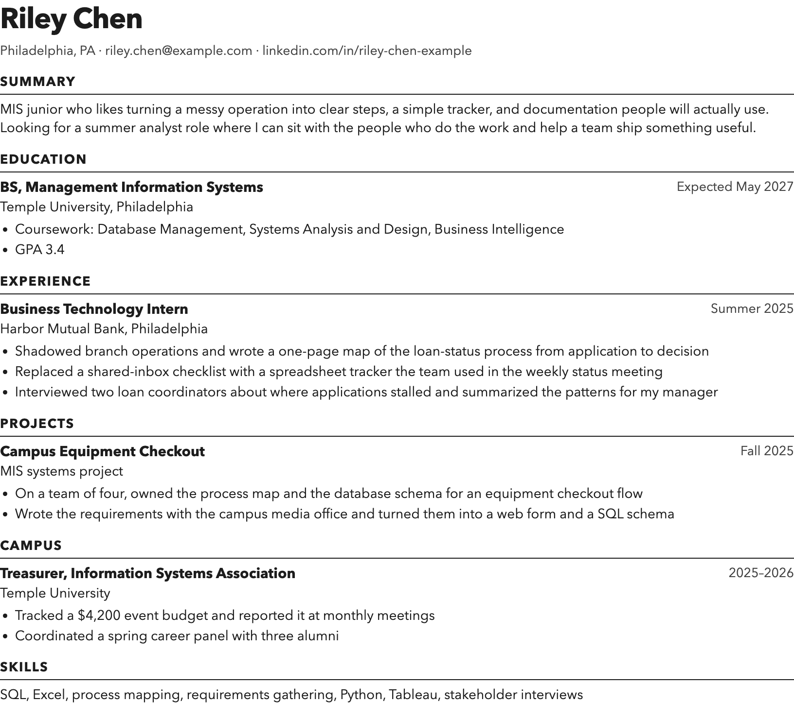
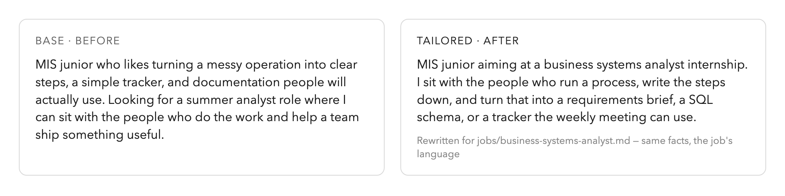

Temple AIS · Oct 21
Luis Cielak → MIS → design → The Hooman Loop + Cursor Philly
Why this matters
The loop
What you need
An agent that reads files and writes markdown
The three files you attach
One laptop per group. Nothing to install in the room — you just talk to the agent.
The one rule
Demo · beat 1
Open the base resume and the job. Riley Chen is fictional. Read the rule before you prompt.

Demo · beat 2

Paste the prompt. Watch the summary change. Read the before and after out loud.
Demo · beat 3
Same words, three files. Ask the agent to write the PDF.
The three prompts
Your turn
Take it home
github.com/luiscielak/resume-kit
clone → open in your agent → tailor